Liam — El Explorador Visionario
Guardián · Explorador VisionarioGuardián de las historias, del sueño y del pueblo. Su lámpara dorada ilumina el camino en la más densa oscuridad y simboliza la claridad y el propósito.
Toca el texto donde quieres empezar. Escape cancela.
Capítulo 03 • La Luz Interior
«La luz está dentro de ti.» — Atribuida a Lao Tse
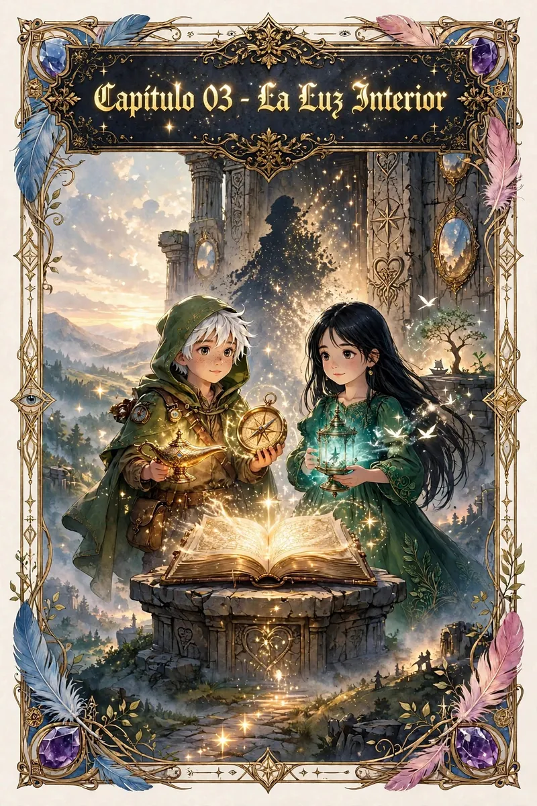
Portada oficial — La Luz Interior
Guardián de las historias, del sueño y del pueblo. Su lámpara dorada ilumina el camino en la más densa oscuridad y simboliza la claridad y el propósito.

Su lámpara transforma las sombras en narraciones llenas de sabiduría. Escucha lo que otros callan y enseña el poder del lenguaje para crear realidades nuevas.
Fichas completas: Liam · Elara · Ver todos los personajes
El amanecer llegó con aire fresco y una luz suave. Las historias contadas bajo el sauce habían puesto algo en marcha, pero la oscuridad seguía rondando. Liam y Elara volvieron al templo con sus lámparas en las manos. Para liberar a su comunidad no bastaba con leer las historias: tenían que conocer a quienes las leían.
Liam, el Explorador Visionario. De niño pasaba noches enteras mirando las estrellas, preguntándose qué había más allá del horizonte. Esa curiosidad lo llevaba a cuestionar las normas y a seguir una intuición que los demás no siempre entendían. Su lámpara reflejaba ese impulso: iluminaba lo que aún no existía. Pero Liam también dudaba. A veces la responsabilidad de guiar al pueblo lo abrumaba, y temía no estar a la altura.
—Tu visión nos muestra el camino —le decía Elara.
Elara, la Guardiana del Alma. De pequeña pasaba horas escuchando a los ancianos del pueblo, y había aprendido a notar lo que callaban. Su lámpara convertía sombras en relatos. Pero su empatía tenía un precio: absorbía la tristeza y el miedo ajenos hasta sentirse desbordada. Para recuperar el equilibrio recurría a la meditación y a la quietud.
—Cada historia es un reflejo del alma —solía decir.
Sentados frente a frente, comprendieron que eran complementarios: él daba dirección a la sensibilidad de ella; ella daba profundidad al impulso de él. Y entendieron algo más: cada uno tenía también una sombra, y reconocerla era parte del camino.
—Para transformar al pueblo —dijo Liam—, primero tenemos que transformarnos nosotros.
Liam y Elara son personajes inspirados en arquetipos, patrones universales de pensamiento y conducta. Reconocer cuáles predominan en ti ayuda a entender tus motivaciones y tus desafíos.
Visión y sensibilidad, acción e introspección, razón y emoción: ninguna basta por sí sola. Pregúntate cómo equilibrar tu mente racional con tu mundo emocional.
Cuando dos personas trabajan por una misma meta, sus acciones adquieren un sentido mayor. ¿Cuál es el propósito que te impulsa, y con quién lo compartes?
El término arquetipo procede de Carl Jung, que lo describió como imágenes y patrones del inconsciente colectivo presentes en mitos y cuentos de todas las culturas, como la Sombra, el Héroe o el Anciano Sabio. «Explorador Visionario» y «Guardiana del Alma» no son arquetipos jungianos clásicos, sino figuras literarias que se inspiran en ellos. Su valor está en lo que nos permiten preguntarnos: ¿qué parte de mí domina?, ¿qué parte he dejado en la sombra?
Anota las cualidades que más te definen. ¿Te pareces más a Liam, a Elara o a una mezcla? Escribe qué decisiones recientes tomaste desde cada una y un pequeño paso que equilibraría tu balance.
Lista los aspectos de ti que sueles ocultar o negar. Junto a cada uno escribe qué te enseña. Elige uno y trátalo esta semana con compasión en lugar de huir de él.
Escribe cuál es tu propósito personal y cómo podría encontrarse con el de otras personas. Elige una acción concreta para hoy.
Lo que sigue no forma parte del texto del libro. Son ampliaciones, ilustraciones y materiales didácticos de la web. Las clasificaciones de edad son orientativas y no certificaciones oficiales, y las lecturas simbólicas no sustituyen la atención psicológica profesional. Ver la versión anterior de esta página.
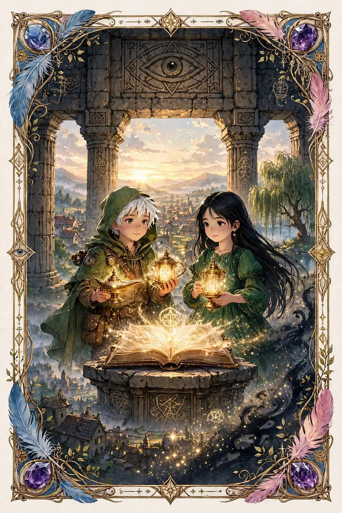
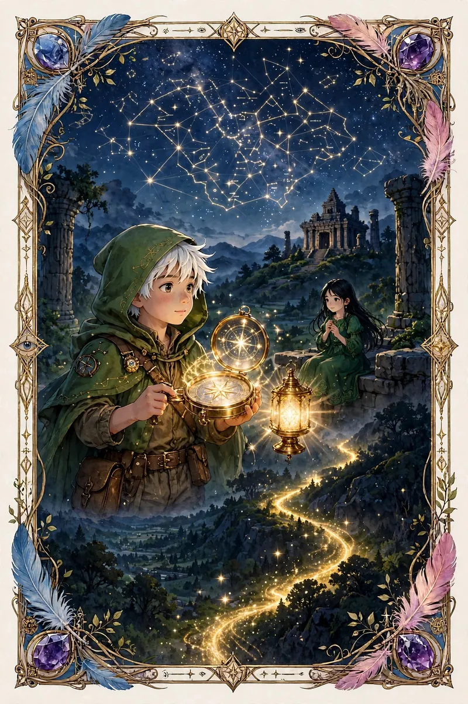
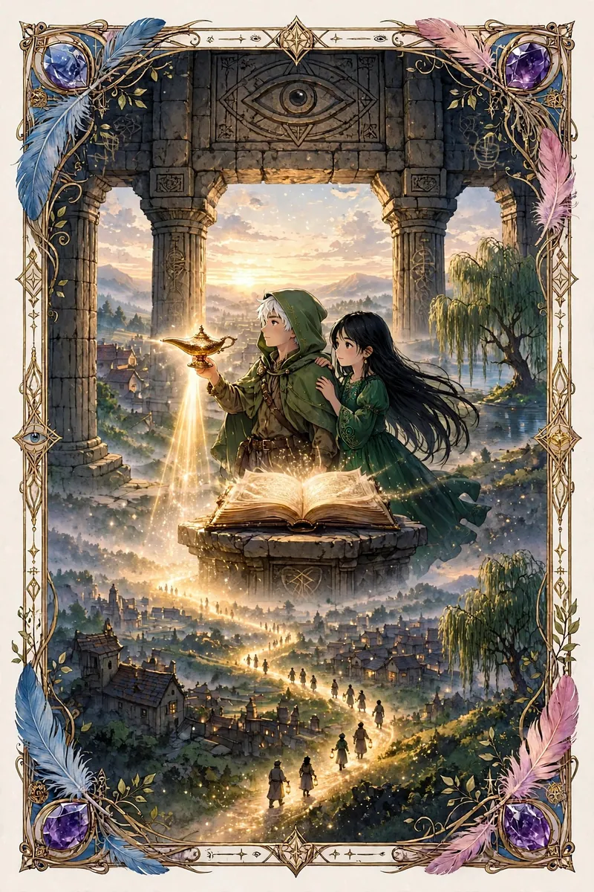
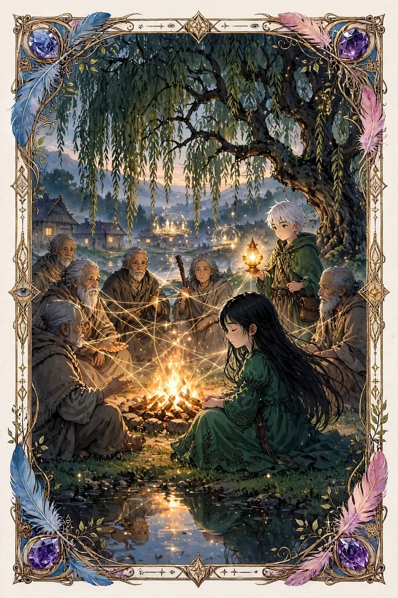
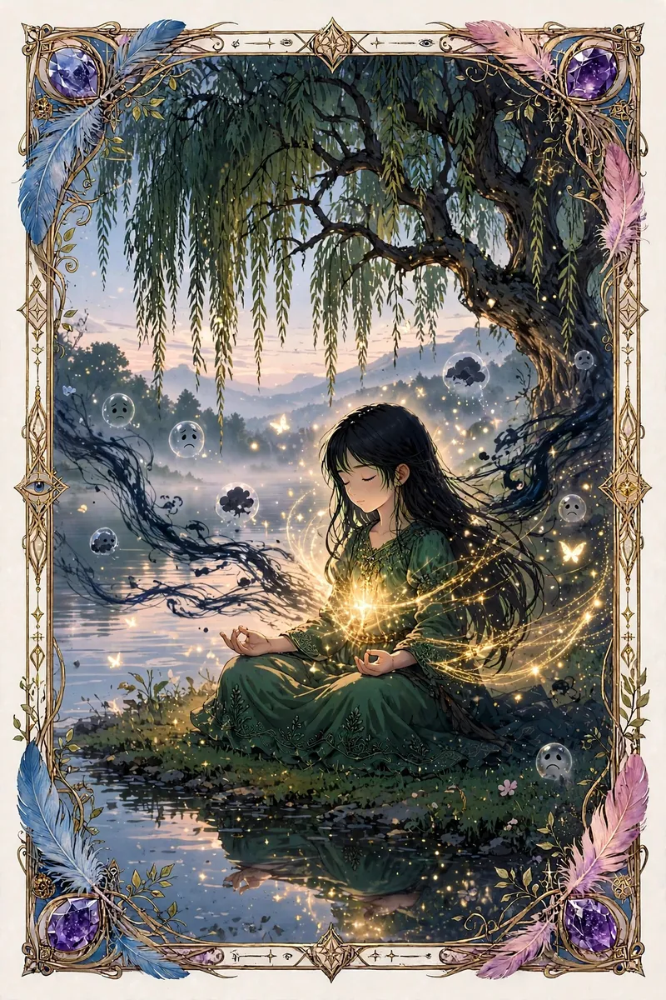
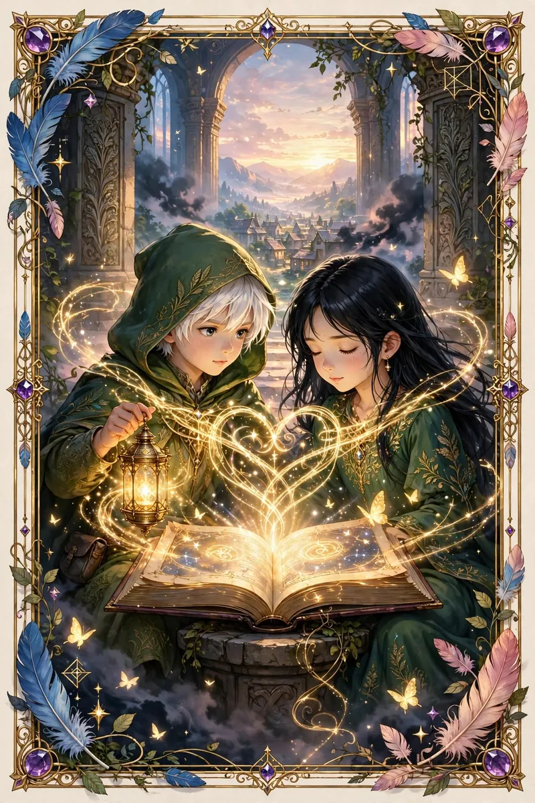
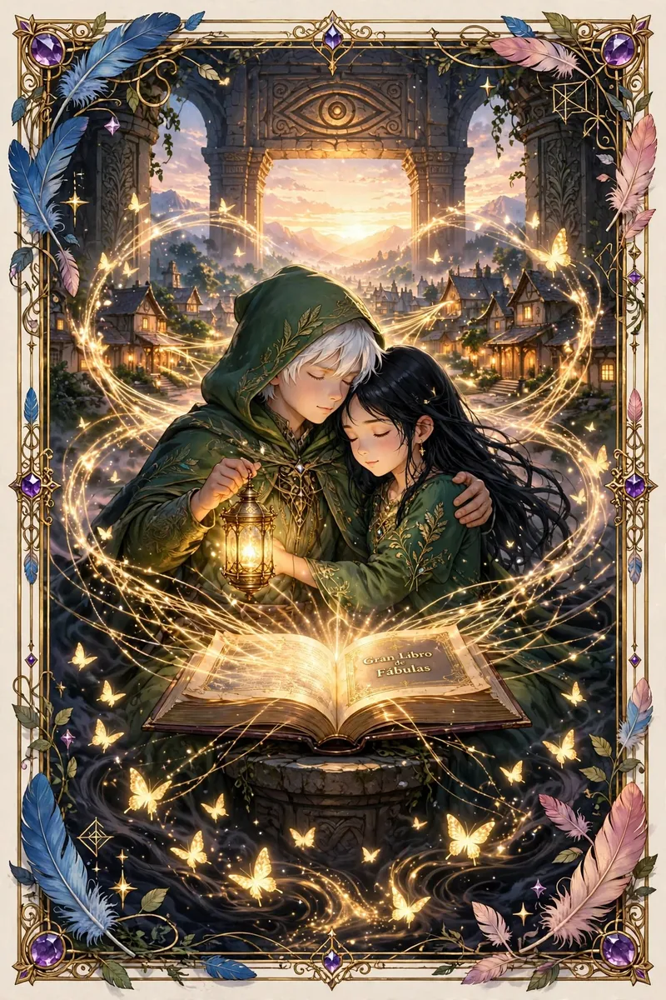
Contenido recomendado para Middle Grade (+10 años)
Cinco espejos para reconocer qué historia te guía, cómo equilibras razón y emoción, qué sombra pide ser integrada y qué propósito compartido te llama. Cada bloque invita a una pausa ilustrada: imagen completa sin recorte, marco dorado y pregunta que transforma.
01 / 05
Conociendo Nuestros ArquetiposLiam, el Explorador Visionario, y Elara, la Guardiana del Alma, representan dos arquetipos poderosos que guían sus acciones. Reconocer nuestros propios arquetipos nos ayuda a entender las motivaciones que nos impulsan y los desafíos que enfrentamos.
¿Qué arquetipo guía tus acciones?
¿Cómo influye en tus decisiones diarias?
Espejo • Explorador • Guardiana • Signos de interrogación
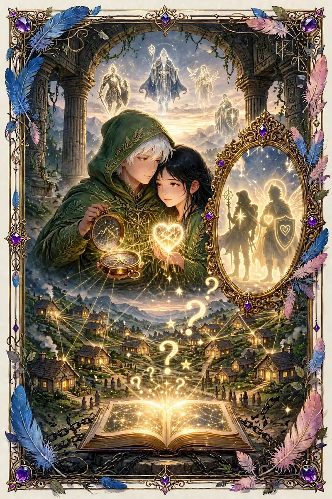
02 / 05
Integración Visión y AlmaLa unión de los arquetipos de Liam y Elara subraya la importancia de integrar diferentes aspectos de nuestra personalidad para alcanzar un equilibrio. Elara equilibra la visión expansiva de Liam con su conexión emocional, mientras que Liam aporta dirección a la sensibilidad de Elara.
¿Cómo puedes equilibrar tu mente racional con tus emociones?
¿Cómo combinar visión de futuro con cuidado interior?
Yin-Yang dorado • Brújula • Corazón • Mariposas
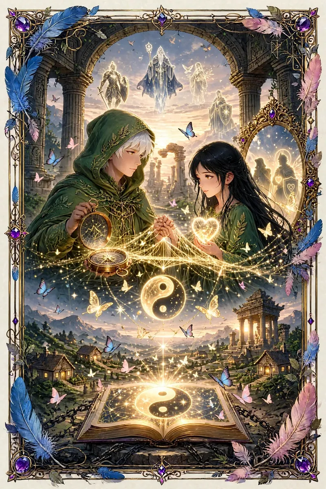
03 / 05
Autoconocimiento como CaminoLiam y Elara comprenden que para transformar a su comunidad, primero deben conocerse y transformarse a sí mismos. El autoconocimiento es visto como la base de cualquier cambio significativo.
Reflexiona sobre tus creencias y patrones. ¿Qué necesitas cambiar dentro de ti para influir positivamente en los demás?
Espejo ovalado • Luz y sombra • Camino de luz
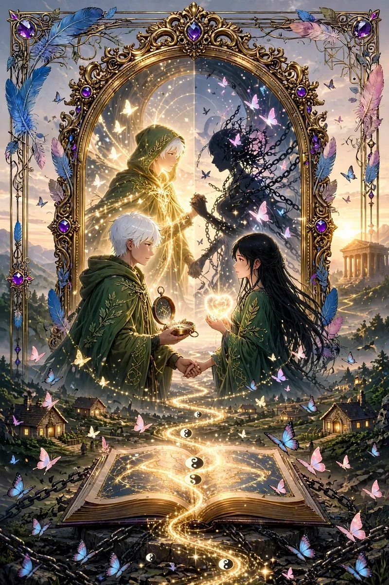
04 / 05
Escucha y ComunicaciónLiam y Elara se preparan para compartir historias que liberarán a su pueblo. Saben que la elección de las palabras y la manera en que comunican es crucial. La comunicación efectiva y la escucha activa son herramientas poderosas para la transformación.
¿Estás eligiendo conscientemente tus palabras para inspirar y guiar a otros?
¿Escuchas permitiendo que otros exploren sus propias verdades?
Sauce del Reflejo • Círculo • Hilos dorados
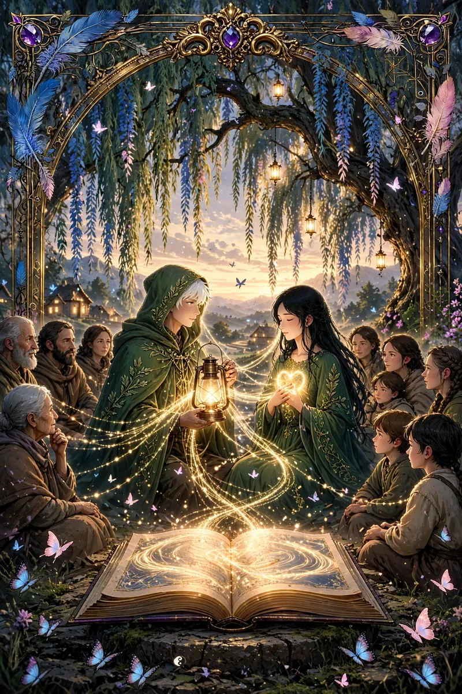
05 / 05
Propósito CompartidoLa misión compartida de liberar a su comunidad refleja la importancia de un propósito común. Cuando trabajamos con otros hacia un objetivo común, nuestras acciones adquieren un sentido más profundo. Las historias personales y colectivas son vehículos de aprendizaje y autodescubrimiento.
¿Cuál es el propósito que te impulsa?
¿Tus historias te limitan o te empoderan para alcanzar nuevas alturas?
Estrella dorada • Círculo • Cadenas rotas • Pueblo unido
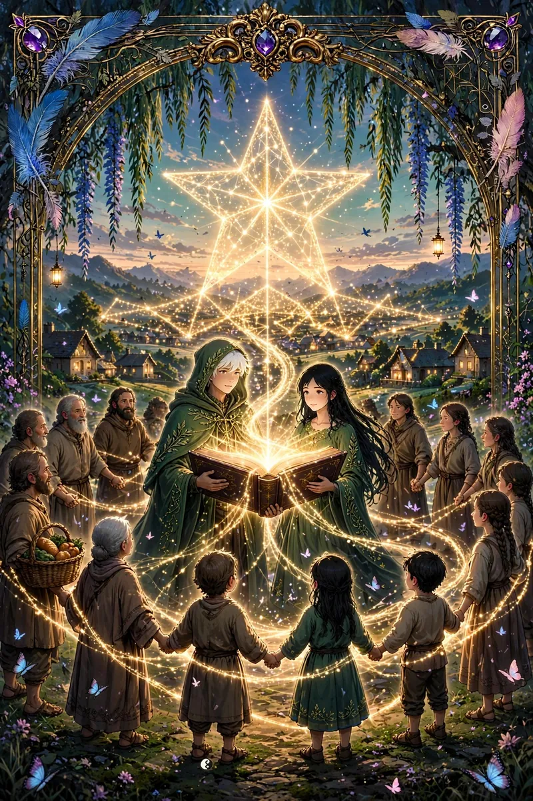
Cada pregunta es una lámpara: no busca respuesta inmediata, sino iluminar el camino que ya llevas dentro. ¿Qué historia eliges contar hoy para transformar tu comunidad?
Coaching Ontológico • El Gran Libro de Fábulas • Capítulo 03Cinco lecturas psicoanalíticas para reconocer cómo los arquetipos de Liam y Elara reflejan la psique, integran opuestos y transforman las historias que nos contamos en fuente de cambio personal y colectivo.
01 / 05
Psicoanálisis • ArquetiposLuz • Sombra • Explorador • Guardiana
Liam como Explorador Visionario refleja la necesidad humana de buscar conocimiento y expandir límites. Elara como Guardiana del Alma representa la conexión emocional y espiritual. Ambos enfrentan conflictos universales: duda e inseguridad frente a sueños, y el riesgo de absorción emocional por exceso de empatía.
El espejo ovalado dorado no miente: a la derecha, Liam y Elara luminosos con brújula y corazón; a la izquierda, tinta negra y maraña de hilos. La psique se reconoce en ambos reflejos, luz y sombra entrelazadas bajo el Gran Libro.
Espejo ovalado • Brújula estelar • Constelaciones • Mariposas
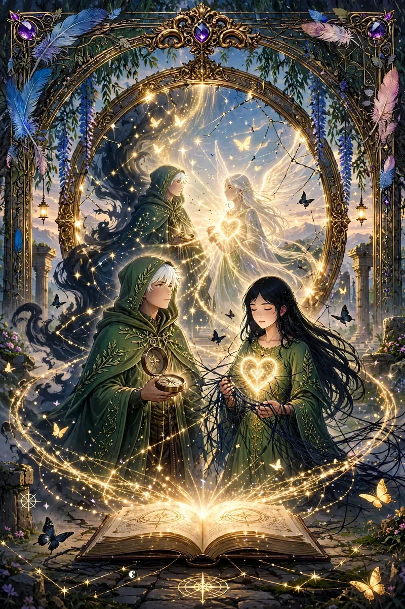
02 / 05
Integración • IndividuaciónIndividuación • Razón • Emoción
El relato subraya la integración de opuestos dentro de la psique. La individuación —proceso de llegar a ser uno mismo— solo se logra cuando las distintas partes de la psique se integran de manera armónica. Razón y emoción, exploración e introspección deben reconciliarse.
El Yin-Yang gigante dorado y azul no divide, abraza: brújula y corazón, mandala dorado y mariposas marrones y azules giran juntos. La maraña negra abajo se disuelve en hilos dorados cuando Liam y Elara se abrazan frente al Gran Libro.
Yin-Yang dorado • Mandala • Mariposas • Gran Libro
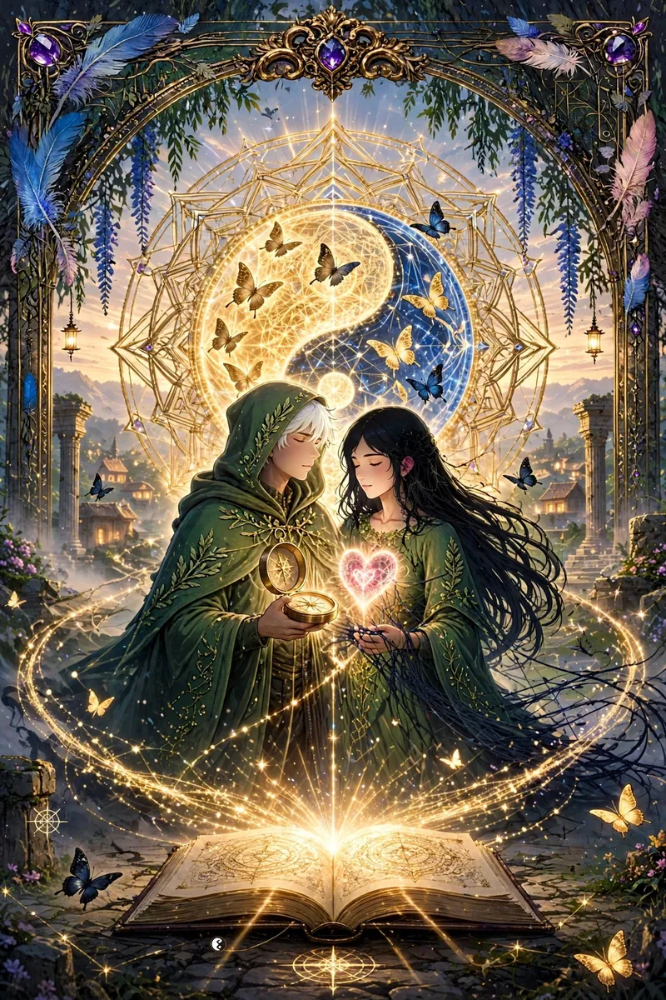
03 / 05
Historias • InconscientePatrones • Miedos • Creencias
Desde una perspectiva psicoanalítica, las historias no son meros relatos, sino vehículos que permiten acceder al inconsciente y reconocer patrones internos. Al revisar y reescribir las historias que nos contamos, nos liberamos de oscuridades internas como miedos y creencias limitantes.
Abajo, el abismo oscuro con cadenas gruesas es la creencia limitante. La carroza dorada de Cenicienta hecha de hilos de luz y mariposas emerge justo de ahí: reescribir la historia convierte la oscuridad en vehículo.
Carroza dorada • Cadenas • Yin-Yang • Hilos dorados
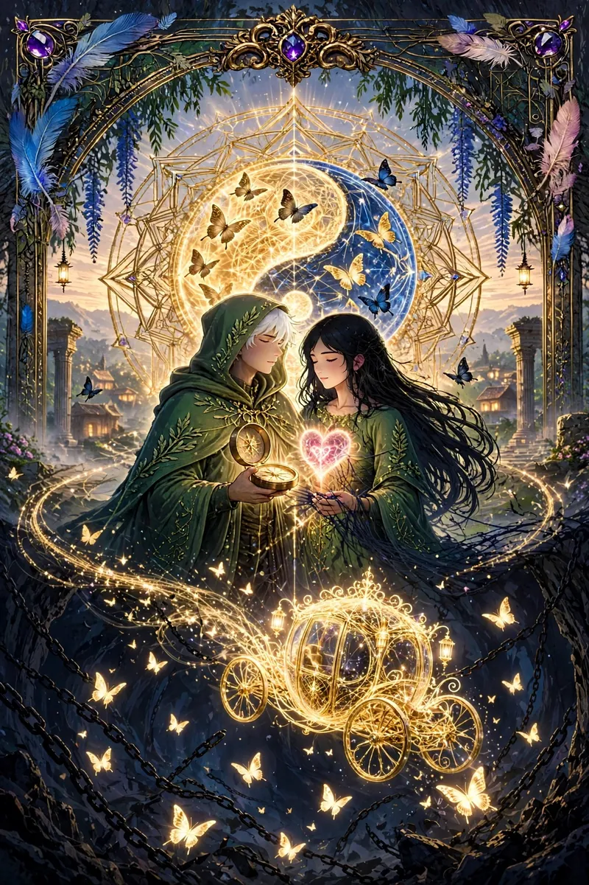
04 / 05
Autoconocimiento • TransformaciónMotivaciones • Sombras • Autenticidad
Al comprender sus arquetipos y desafíos internos, los personajes toman decisiones más conscientes que benefician tanto a ellos como a su comunidad. Conocer nuestros arquetipos identifica motivaciones y sombras, permitiendo actuar de manera más auténtica y con impacto positivo en el entorno.
La llave dorada gigante con balanza y sol en manos de ambos abre puertas doradas a los lados. Abajo, la luz del Gran Libro rompe cadenas y escombros: comprender motivaciones y sombras ilumina al pueblo entero.
Llave dorada • Balanza • Gran Libro • Puertas abiertas
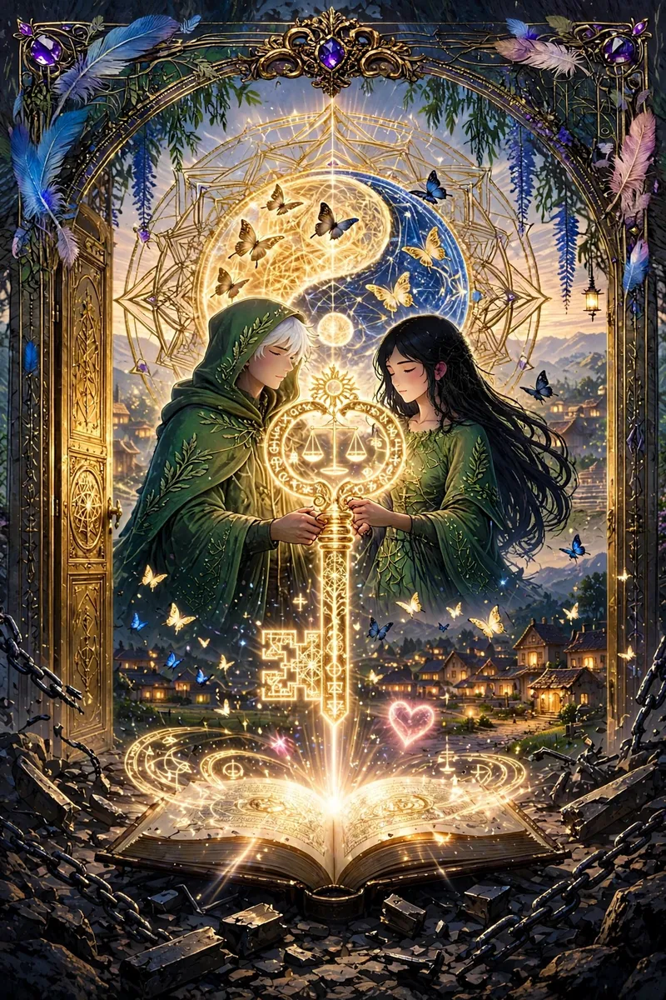
05 / 05
Psique • Cambio • Cierre Épico5 Arquetipos • Autoconocimiento • Potencial
El análisis revela cómo el autoconocimiento y la integración de los diferentes arquetipos pueden ser herramientas poderosas para la transformación personal. Las historias, como reflejo de nuestra psique, son vehículos de cambio que, al ser comprendidas y reescritas, liberan nuestro potencial.
Arriba, los 5 arquetipos luminosos —caballero con escudo de león, búho sabio, explorador con mochila y brújula, niña con mariposas, guardiana con corazón— orbitan el Yin-Yang. Abajo, el Gran Libro rompe cadenas con rayos de luz. La llave dorada en manos de Liam y Elara no abre una puerta: libera el potencial que ya estaba dentro.
5 Arquetipos • Llave • Gran Libro • Pueblo Iluminado
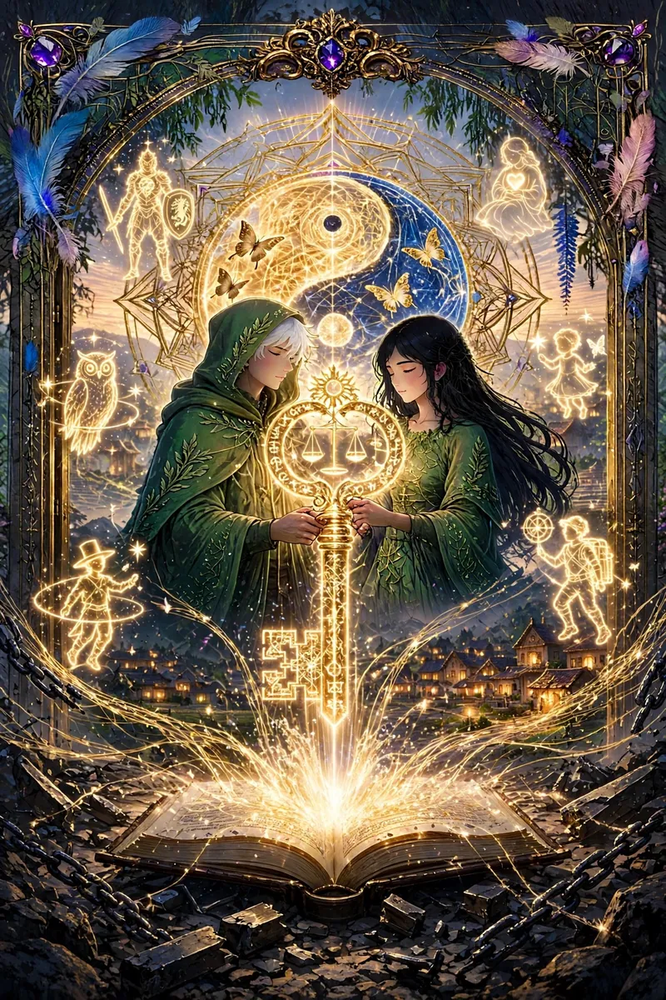
Cierre épico psicoanalítico
De la psique a la historia, de la historia a la comunidad: integrar arquetipos no es elegir uno, es sostener la llave dorada que reconoce luz y sombra, razón y emoción, y elige reescribir.
La psique iluminada transforma cadenas en mariposas doradas y al pueblo en comunidad consciente.
Análisis Psicoanalítico • Individuación Junguiana • El Gran Libro de Fábulas • Capítulo 03Explora tus arquetipos, sombras y propósitos. Toca cada ejercicio para expandir sus pasos.
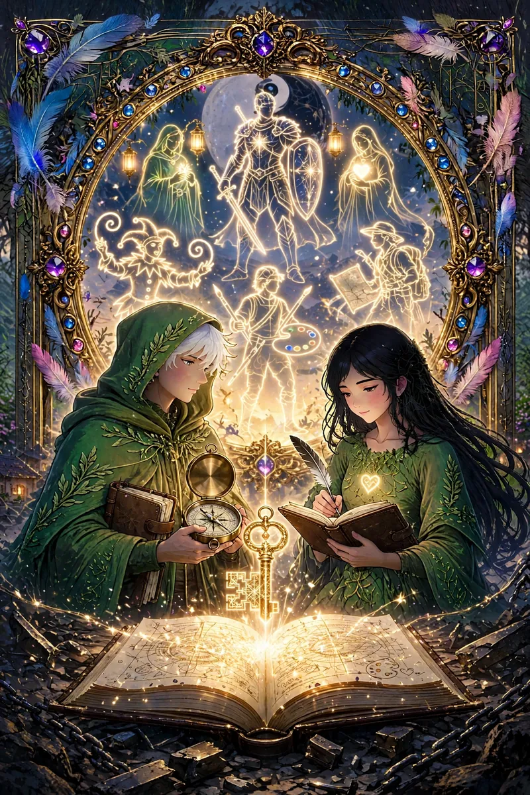
Instrucciones
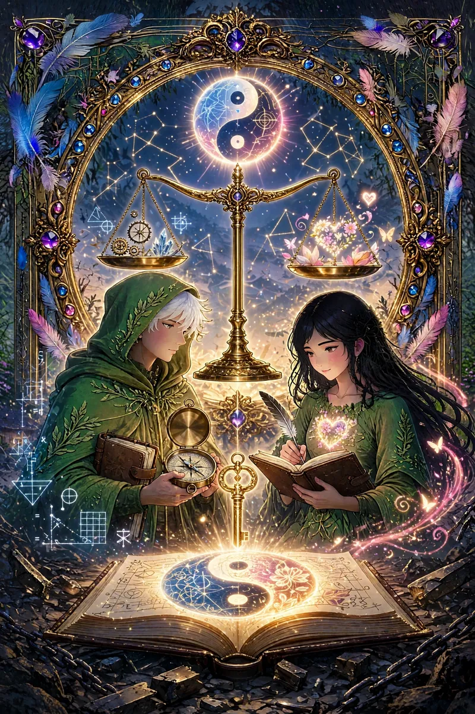
Instrucciones
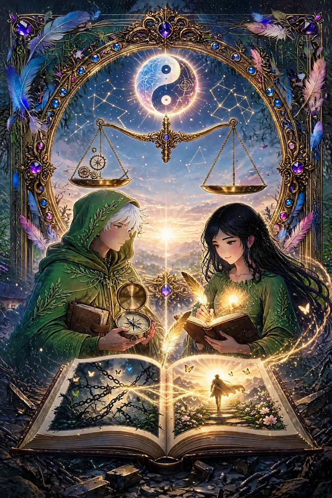
Instrucciones
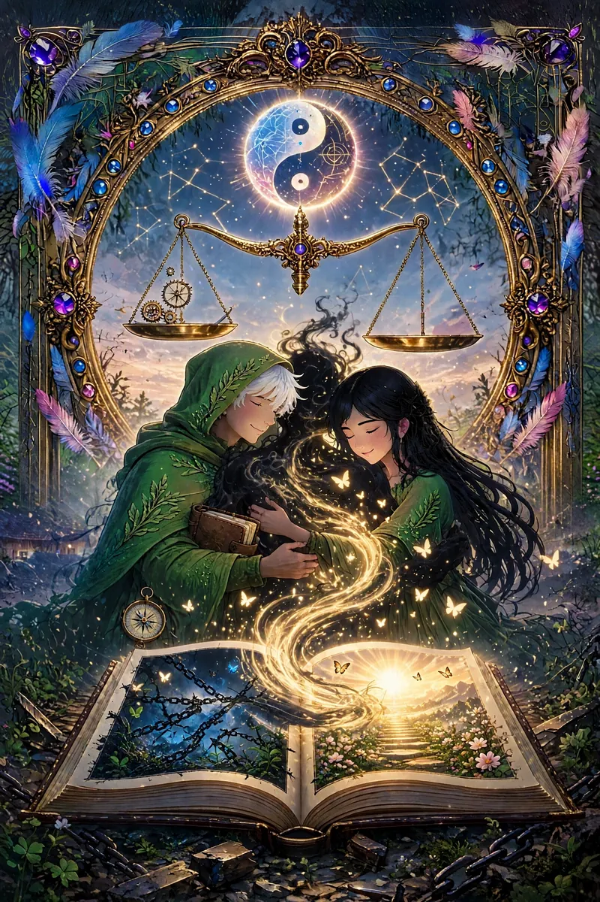
Instrucciones
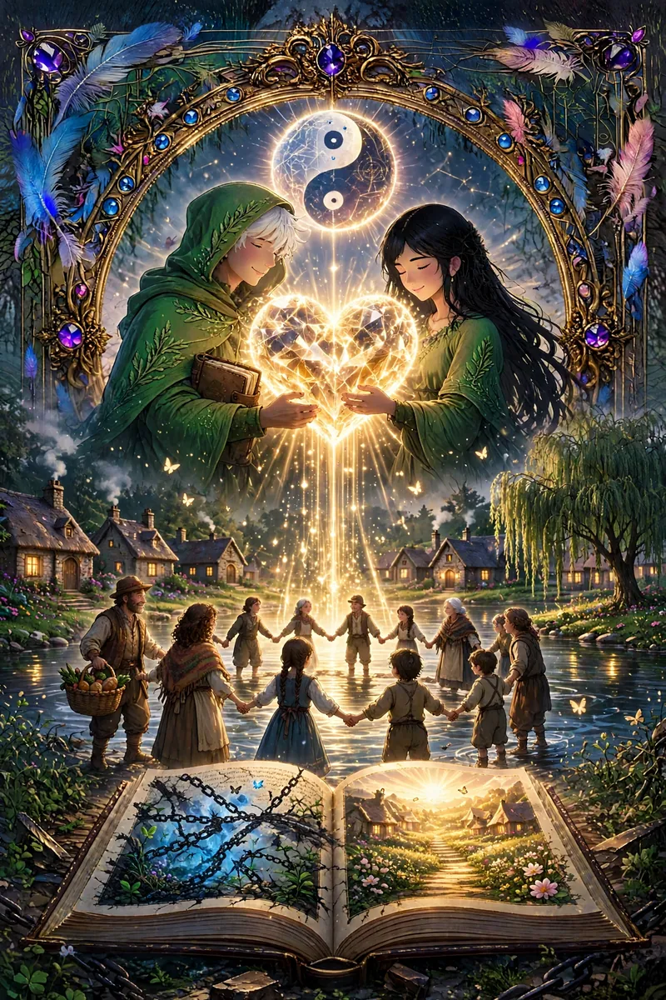
Instrucciones
Estampas en pixel art de lo que aparece en «La Luz Interior». Toca una para verla más grande.
“Su verdadera fortaleza residía en la unión de sus arquetipos y en la sabiduría que surgía de las historias que los conectaban con su comunidad y consigo mismos”